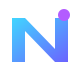

⌁
01 / CONNECT
Bring work together
Unify the signals, tasks, and conversations that keep your business moving.
Discover the workflow ↗
NEXORABring your operations, insights, and teams into one clear view. Nexora turns scattered workflows into confident next steps.
Replace disconnected tools and unclear handoffs with a connected operating picture designed to help teams move with purpose.
Unify the signals, tasks, and conversations that keep your business moving.
Discover the workflow ↗Turn activity into useful context with focused dashboards and clear reporting.
Explore insights ↗Give teams a shared next step, stronger accountability, and room to scale.
Our point of view ↗The Nexora concept platform is designed around clarity: a calm interface, useful signals, and a visual system that helps busy teams focus on meaningful progress.
Great technology should make the next step feel clearer, not more complicated.
THE NEXORA DESIGN PRINCIPLE
Have a workflow challenge? Let's start with the opportunity.